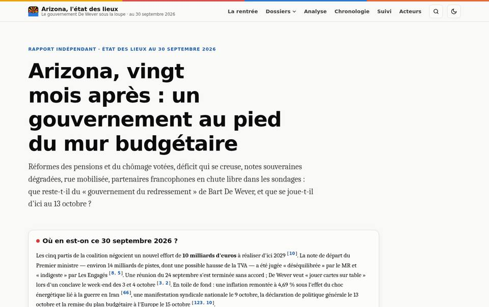
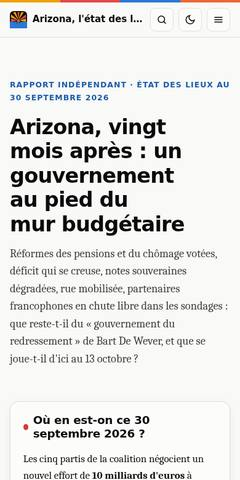

01 · Claude
Arizona, l'état des lieux
Le rapport de départ : vingt mois de gouvernement De Wever, thème par thème, avec les arguments des deux camps.
- 22 pages
- 142 sources
- 68 dates
- 21 mesures suivies
Ce qu'on y trouve
- 16 dossiers thématiques
- Chronologie et glossaire filtrables
- Tableau de suivi des réformes
- Graphiques accessibles